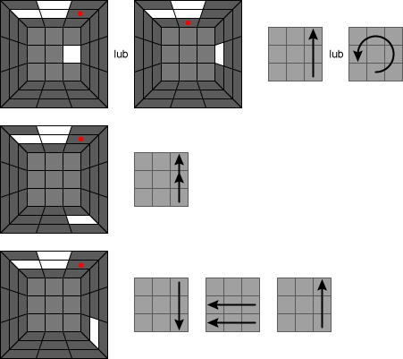

Etap 1 - biały krzyż
Biały krzyż polega na ułożeniu krzyża składającego się z białych klocków, oraz odpowiednie dopasowanie go kolorystycznie do pozostałych 4 ścian kostki.
Poniższy obrazek pokazuje, co należy uzyskać z pomieszanej kostki (kolory szare to klocki, które są nieistotne, nie mają znaczenia na tym etapie).
Ułożenie pierwszego z etapów nie powinno sprawić większych kłopotów bez żadnych poradników. Jednak jako że jest to poradnik dla zupełnie początkujących, opiszę całą procedurę układania białego krzyża. Zaznaczam jednak, że podana przeze mnie metoda jest najprostsza, ale nie jest najszybsza. Z pewnością z czasem wyrobisz sobie własną i znacznie szybszą metodę układania krzyża.
Zaczynamy od znalezienia białej ścianki, którą od tej chwili będziemy trzymać u góry. Znajdujemy pozostałe białe klocki krawędziowe i przerzucamy je na białą ścianę tworząc krzyż - na razie jednak nie zwracamy uwagi na zgodność ich kolorów z bocznymi ścianami. Powinieneś uzyskać coś takiego jak na rysunku poniżej. Jest to biały krzyż nieprawidłowo spermutowany gdyż jego klocki niekoniecznie leżą na właściwych miejscach.
Jeżeli masz problemy z ułożeniem krzyża, poniżej kilka ruchów pomocnych przy jego ułożeniu:

Czerwoną kropką zaznaczono pola gdzie mają docelowo znaleźć się białe klocki. Kolor jasnoszary przedstawia przednią ścianę. Ścianę białą trzymamy u góry. Pamiętaj, że wkładając klocek w miejsce oznaczone czerwoną kropką musi być one puste - nie może być zajęte przez inny biały klocek. Jeśli tak jest, należy przekręcić biały klocek w miejsce gdzie pole oznaczone kropką jest jeszcze puste.
Teraz obracając ściany: lewą, prawą, przednią i tylną o 180 stopni przenosimy wszystkie białe klocki w dół do żółtej ściany. Po wykonaniu tych 4 ruchów kostka powinna wyglądać jak na rysunku poniżej:
Kolejnym krokiem jest obracanie dolną ścianą tak długo, aż natkniemy się na sytuację gdzie boczna ścianka białego klocka jest taka sama jak środek na ścianie przedniej (rys. lewy poniżej). Kiedy znajdziemy taką sytuację przekręcamy przednią ścianę o 180 stopni aby przenieść biały klocek w górę, ale tym razem już z prawidłowym kolorem (rys. prawy poniżej). Poniższy schemat obrazuje taką sytuację:
Procedurę tą powtarzamy 4 razy, aby wszystkie 4 białe klocki powędrowały w górę już z prawidłowym kolorem bocznym. Zakończyłeś pierwszy krok. Kolejnym krokiem są narożniki białej ściany.